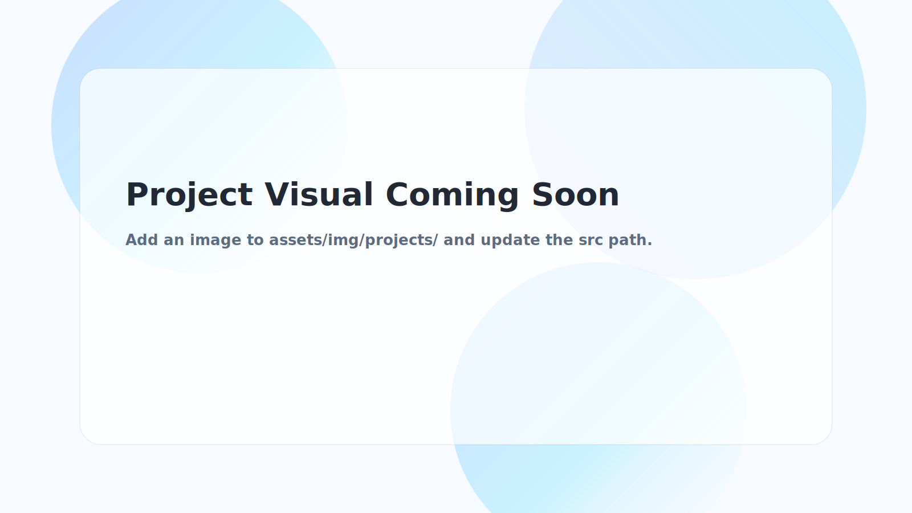

Sim-to-Real Personalization for Impedance Control
Method Exploration · Ongoing

This project explores a sim-to-real personalization approach for impedance control, leveraging digital twins and learning-based methods to improve controller adaptability and stability without increasing risk to real users.
The work is currently in a method-validation stage, with a focus on safe evaluation and screening of personalization strategies prior to real-world deployment.
- Simulation-based evaluation pipeline for personalized control
- Pre-deployment screening for safety and stability
- Conceptual sim-to-real transfer framework for real systems
Why It Matters
- Addresses inter-user variability in long-term wearable robot use
- Reduces trial-and-error risk during personalization on real users
- Lays groundwork for combining learning-based methods with safety-aware control
Skills highlighted
Sim-to-Real
Digital Twin
Personalized Control
Safety Constraints
Ongoing